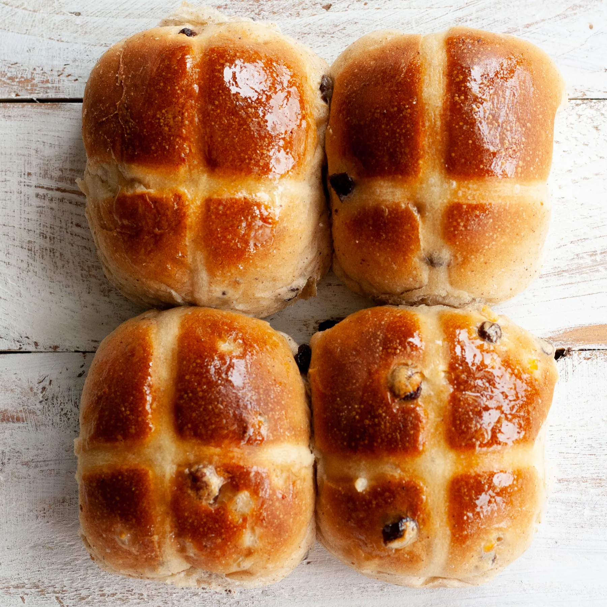

Are you familiar with that freshly baked smell that warms your body up and makes your mouth start watering?

Family run since 1986
We are an independent family run bakery established in 1986, specialising in fresh cream and birthday cakes, in the heart of Ealing.
Our artisan cakes, bread and pastries are waiting for you. All our gateaux are homemade at the bakery, and drip cakes are our customers’ favourite for birthday celebrations.
- 1986
- family run bakery in Ealing
- £19
- a 6 inch gateau from
- 6am
- doors open, Monday to Saturday